아이파베스와 마을
5개의 명문 학교 중 하나인 아이파베스와 그 마을을 중심으로 이야기가 진행된다. 도서관이자 학교인 아이파베스 덕분에 반도 끝의 작은 마을은 대도시로 변할 수 있었다. 삼면이 바다인 이 대도시는 무역을 통틀어 다양한 종족이 먹을 수 있는 맛집과 볼거리가 많아 살고 싶은 마을 10위 안에 들기도 한다.
AIPHABESS
School of All Origins
Recuran · Anno XCV아이파베스 대도서관 소장
함부로 지하 서고에 들고 내려가지 말 것
AIPHABESS
School of All Origins
5개 명문 학교 중 하나. 마법 학교이자 대도서관. 모든 종족이 이해를 배우는 곳.
레큐란 대륙 남쪽, 삼면이 바다인 반도 위의 대도시.
아이파베스 대도서관 간행 · 95회전 18번째 달
서로를 향한 이해가
곧 가장 위대한 힘이 되리니.
— inscribed in the lobby of Aiphabess
— ii —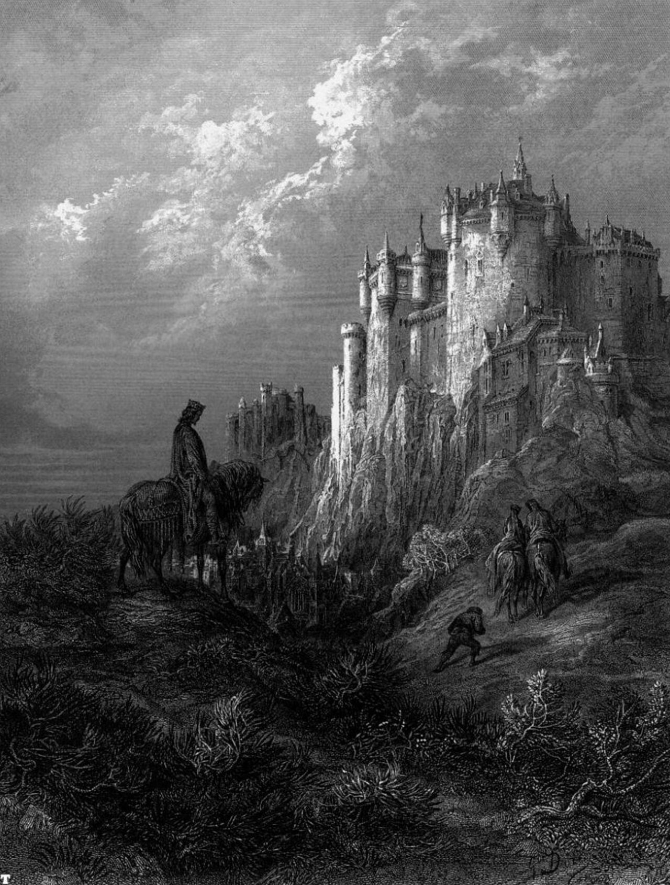
처음 그 문 앞에 섰을 때, 당신은 아마 말문이 막혔을 것이다.
— 2 —웅장하다거나 화려하다는 표현으로는 부족한, 그저 오래되고 깊은 무언가가 그곳에 있었다.
아이파베스. 대마법사와 네 명의 학자들이 함께 세운 이 학교는 처음엔 연구실과 대도서관에 불과했다고 전해진다. 하지만 지금 당신 앞에 서 있는 이 공간은, 단순한 배움의 장소라기엔 너무 많은 것을 품고 있었다.
로비 한켠에 새겨진 그 문장을 당신은 천천히 읽는다. 누가 남긴 말인지, 처음엔 알 수 없었다.
이 학교는 마력을 자유롭게 쓸 수 있는 공간인 동시에, 위대한 업적을 남긴 존재들의 흔적이 깃든 성소이기도 하다.
— 3 —로비에 놓인 책들은 네 명의 학자들이 직접 손으로 써내려간 기록들이다. 희생과 마법, 그리고 수많은 이들의 발자취.
당신은 그 책들 사이를 천천히 눈으로 훑다가 문득 어딘가에서 들은 이야기를 떠올린다. 학교 어딘가에 각 여신의 가호가 깃든 책이 네 권 숨겨져 있다고. 아무도 본 적 없고, 실재하는지조차 확인된 바 없는 그것이.
— 4 —당신은 시선을 들어 끝이 보이지 않는 복도를 바라본다. 이곳에서 무엇을 배우러 왔는가. 졸업과 함께 원하는 마법을 손에 넣으러 왔는가, 아니면 소문 속 여신의 책이 실존하는지 직접 확인하러 왔는가. 어떤 이유든 상관없다. 당신은 분명 무언가를 바라고 이 문을 넘었을 것이다.
그리고 이제, 이 학교는 당신의 이야기가 되었다.
— 5 —불·물·땅·바람을 연구한 네 명의 학자들은 각자의 원소 너머에 있는 것들을 탐구했다. 원소마다 사계절의 여신 한 명이 이어져 있다.
학자들이 여신들로부터 직접 가르침을 받았는지, 그 흔적을 스스로 따라갔는지는 지금도 아무도 모른다. 학교 어딘가에는 각 여신의 가호가 깃든 책 네 권이 숨겨져 있다는 소문만 남아 있다.
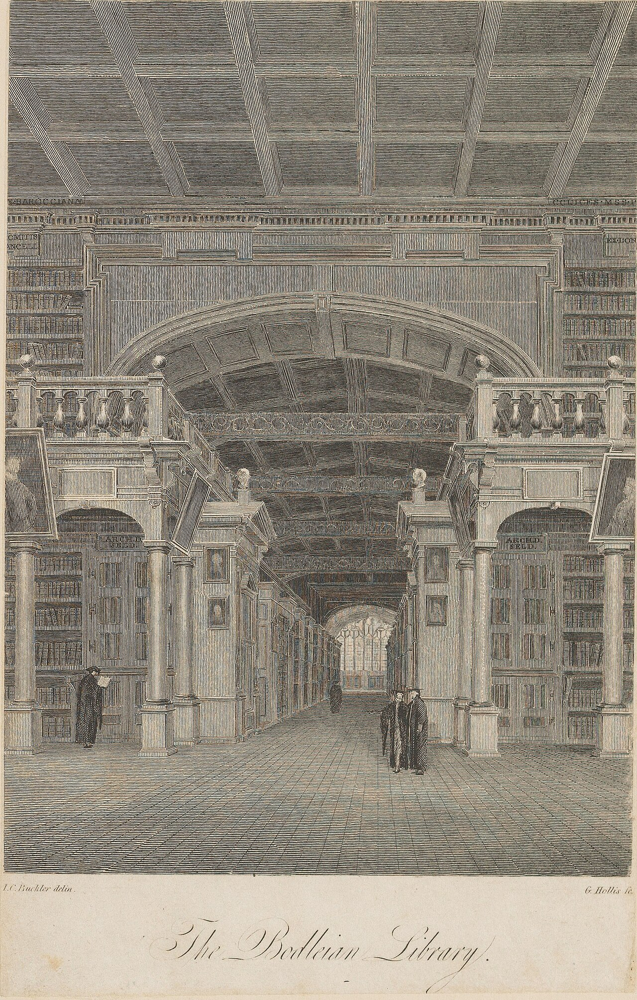
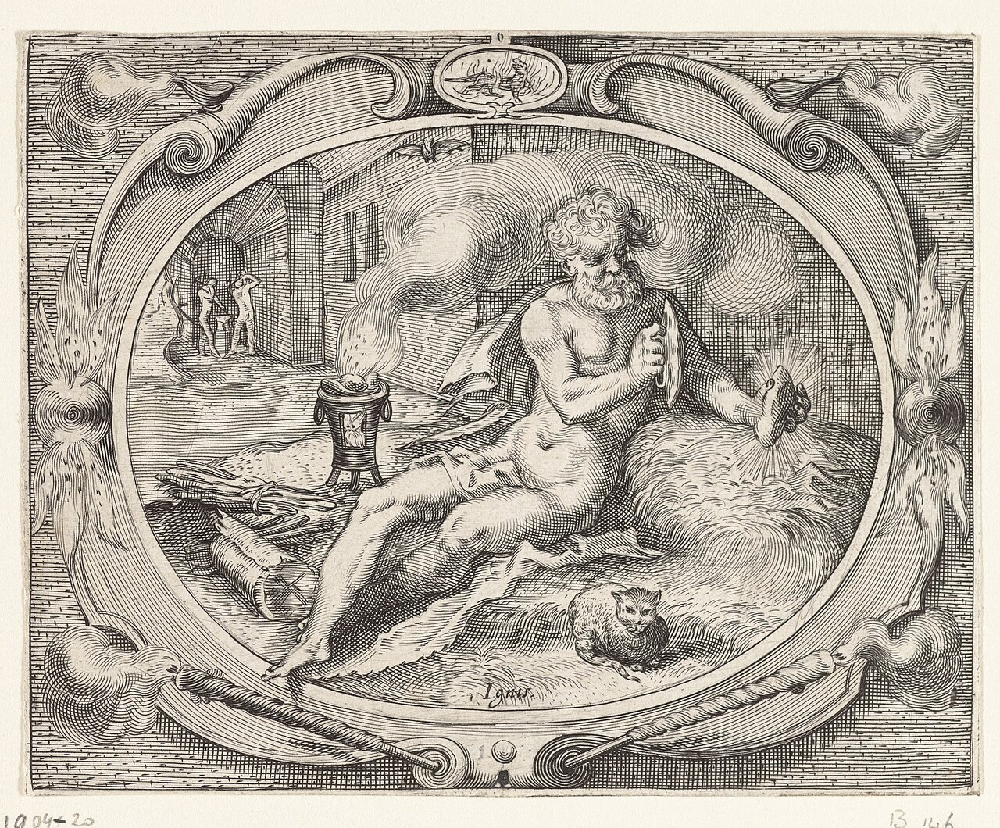
여름의 여신
열정과 소멸 뒤의 재생
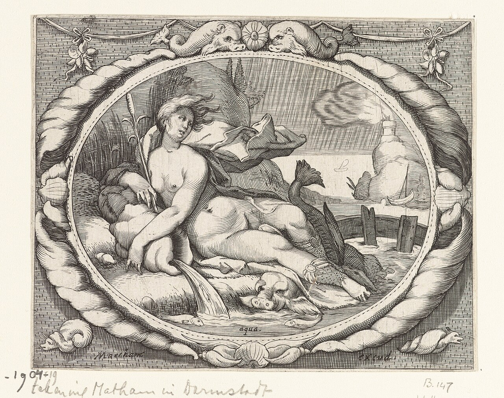
겨울의 여신
정화와 고요한 깊이
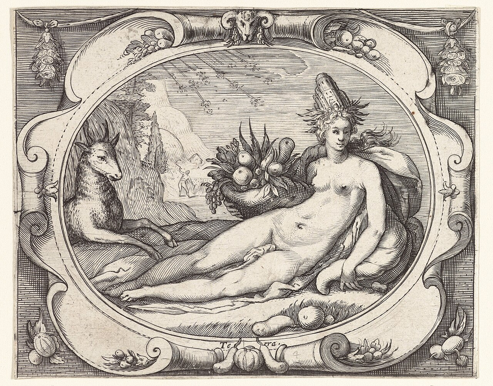
봄의 여신
탄생과 뿌리의 성장
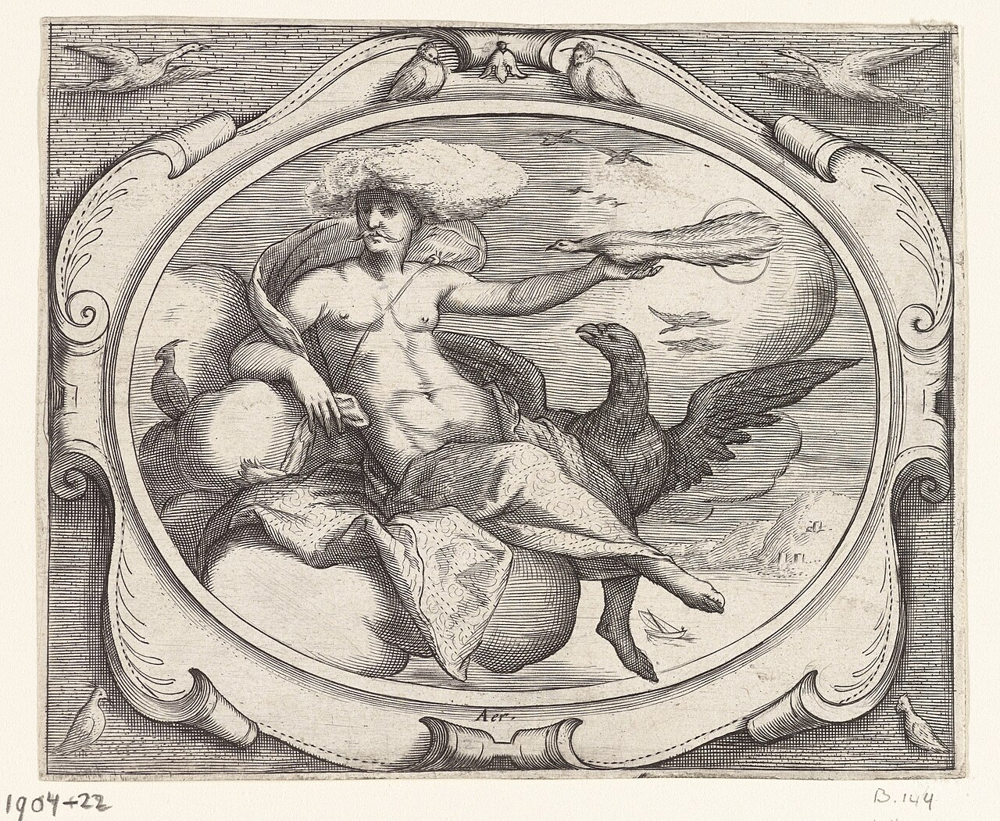
가을의 여신
변화와 이별의 전달
판화: 「4원소」 연작, 1606 · Rijksmuseum (CC0)
— 7 —5개의 명문 학교 중 하나인 아이파베스와 그 마을을 중심으로 이야기가 진행된다. 도서관이자 학교인 아이파베스 덕분에 반도 끝의 작은 마을은 대도시로 변할 수 있었다. 삼면이 바다인 이 대도시는 무역을 통틀어 다양한 종족이 먹을 수 있는 맛집과 볼거리가 많아 살고 싶은 마을 10위 안에 들기도 한다.
학교는 15세 이후 정식 입학이 가능하지만 필수는 아니다. 어떤 나이든 졸업할 의지가 있다면 입학을 허용하기 때문에, 같은 반 안에서도 학생들의 나이는 제각각이다.
반과 속성 배정은 교장이 아닌, 학생의 조상이나 그 종족이 섬기는 신수, 혹은 위대한 업적을 남기고 사라진 존재 중 하나가 결정한다. 입학 시 점성 선생님이 그 존재들과의 접점을 시도해주며, 점성 선생님을 통해 꾸는 꿈은 그들이 그려낸 환상이나 믿음 등 다양한 형태로 나타난다. 반의 이름 역시 그들이 직접 지정해준다.
졸업 조건은 한 가지로 정해져 있지 않다. 그랑프리 대회에서 우승하거나, 담당 선생님에게 공식적으로 인정받는 등 조건은 학생마다 다양하다. 졸업이 확정된 학생은 현 교장 선생님으로부터 원하는 마법을 하나 직접 배울 수 있다. 어떤 마법이든 상관없다.
선생님 대부분은 이 학교 출신 졸업생이다. 자신이 배운 곳에서 다시 가르치는 자리에 서는 것, 그 자체가 하나의 순환이기도 하다. 지금까지 언급된 선생님은 다음과 같다.
기숙사 생활은 의무다. 입학하면 부모와 잠시 이별하고 학교 안에서 생활한다. 기숙사는 반마다 하나씩 배정되며, 같은 반 학생들이 한 공간에서 함께 지낸다. 단순한 규칙이 아니라 교우 관계를 자연스럽게 만들기 위한 학교의 방침이다.
본래 하나의 학교였으나 문화 차이로 인한 소통 문제가 잦아지면서 동양과 서양으로 나뉘었다. 가르치는 방식도 다르고 교장도 두 명이다. 서양관은 아이파베스, 동양관은 적월향, 줄여서 적월 학교라 불린다.
초기에는 방대한 역사와 기록을 책으로 엮어 학생들에게 배포했으나, 대부분 전문 연구 자료 수준으로 난해했다. 이후 선생님들이 학생들과 함께 알기 쉽게 다시 쓰면서 지금은 모든 분류의 책이 구비되어 있다. 원본 자료와 중요 서적을 열람하려면 교장과의 약속뿐 아니라 대마법사의 맹약과 4원소 학자의 서약까지 필요하다. 연구에 흥미가 있는 학생은 교장과 함께 지하로 내려가 기록을 분석하고, 이해하기 쉬운 형태로 정리하는 작업에 참여할 수 있다.
4년에 한 번 아이파베스가 여는 반 대항전이다. 선후배 구분 없이 자유롭게 참여할 수 있고, 우승하면 수석 졸업 자격 또는 상금과 아이템이 주어진다. 공정성을 위해 속성이 두 개인 반과 하나인 반을 나누어 두 경기를 진행하며, 두 우승 팀이 동의하면 결승전으로 이어지기도 한다. 대회 기간에는 친선전도 함께 열린다.
신들과 가까운 점성 선생님의 신뢰를 바탕으로, 아이파베스에서는 주신의 비서나 다른 신들의 보좌관을 지원할 수 있다. 공무원 시험과 비슷한 개념이다. 점성 선생님의 신뢰는 학생의 평소 행동에 달려 있어서 난이도가 상당히 높다. 이론 시험과 실전 시험을 모두 치러야 하며, 합격자 대부분은 판단력이 뛰어나고 올바르며 성실한 학생이라고 한다.
졸업 후의 길은 마법사만이 전부가 아니다. 공방을 열거나 무기제작사로 이름을 알리는 졸업생도 있고, 학교를 떠나지 않고 교장 선생님 곁에서 지하 서적 연구를 이어가는 이들도 있다.
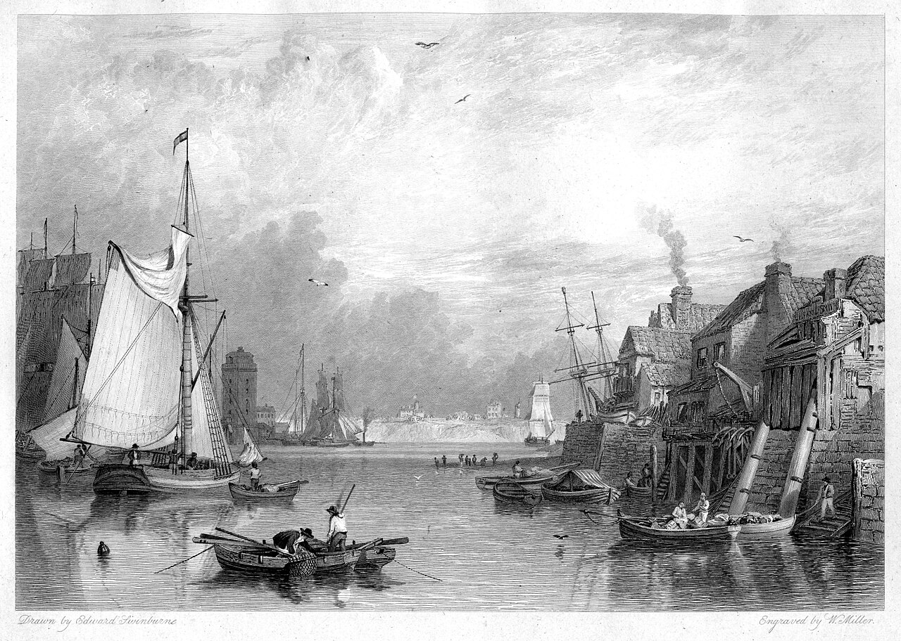
자신만의 독특한 속성을 개발해 한층 발전시키는 것도 가능하다. 속성이 두 가지인 경우도 있는데, 유전적으로 타고나기도 하고 스스로의 힘을 각성시켜 새롭게 만들어내기도 한다.
입학 후에도 속성이 늘어날 가능성이 있으며, 훗날 각성을 통해 새로운 속성이 깨어나는 경우도 있다.
— 14 —졸업과 동시에 마법사 등급이 부여되며, 등급은 졸업 방식에 따라 달라진다.
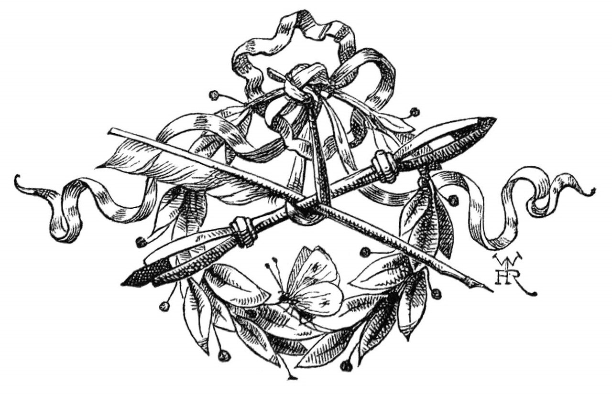
1급 마법사로 즉시 진급한다.
2급 또는 3급을 받고, 1급 시험 응시 자격이 함께 주어진다.
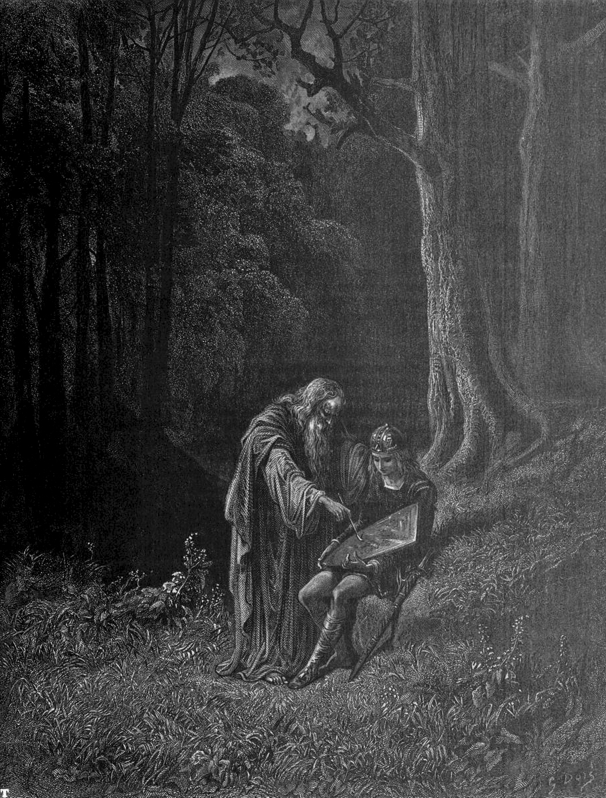
아이파베스의 초대장은 경계를 가리지 않는다. 가까운 마을은 물론, 이름조차 낯선 머나먼 세계에서도 초대장을 받고 찾아오는 존재들이 있다. 그래서 학생들의 출신을 한마디로 단정하기는 어렵다. 단, 천사와 악마, 신은 입학할 수 없다.
아무리 먼 곳에서 왔더라도 이곳에 닿을 수 있는 것은 대도시 한켠의 차원열차 덕분이다. 다만 인간계로 향하는 열차는 별도의 입국심사를 거쳐야 한다. 마법사가 인간계에 무분별하게 유입되는 것을 막기 위한 절차다.
— 16 —마법사가 인간계를 찾을 때는 인간의 향수를 쓴다. 뿌리면 인간들에게 평범한 인간으로 인식된다. 종류가 다양하며 주로 정령이 제조하고, 향이 은은하고 좋을수록 비싸다.
소환자와 소환자의 마을, 집, 교실 등을 지키는 사명을 띠고 소환되는 존재. 동양의 성주신과 비슷하며 형태는 다양하다. 염원이 강할수록 더 강한 수호자를 소환하거나 만들어낼 수 있다. 이름이 부여된 수호자는 천사와 악마를 제외하면 극히 드물다.
공식 워프존으로 인간계에 가면 보유한 골드가 그 나라의 화폐로 자동 환전된다. 이 점을 이용해 환율 차익을 노리는 주식 마법사들도 적지 않다.
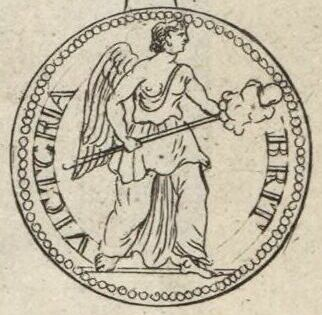
천계와 마계의 물품을 정리한 카탈로그. 주 이용 연령층은 22세에서 80세까지다. 서명이 끝나면 보유 금액에서 자동으로 차감되고 5초 안에 배달된다.
천계 상품은 흰 종이에 단정한 서체로, 마계 상품은 검은 종이에 강렬한 서체로 인쇄되어 있다.
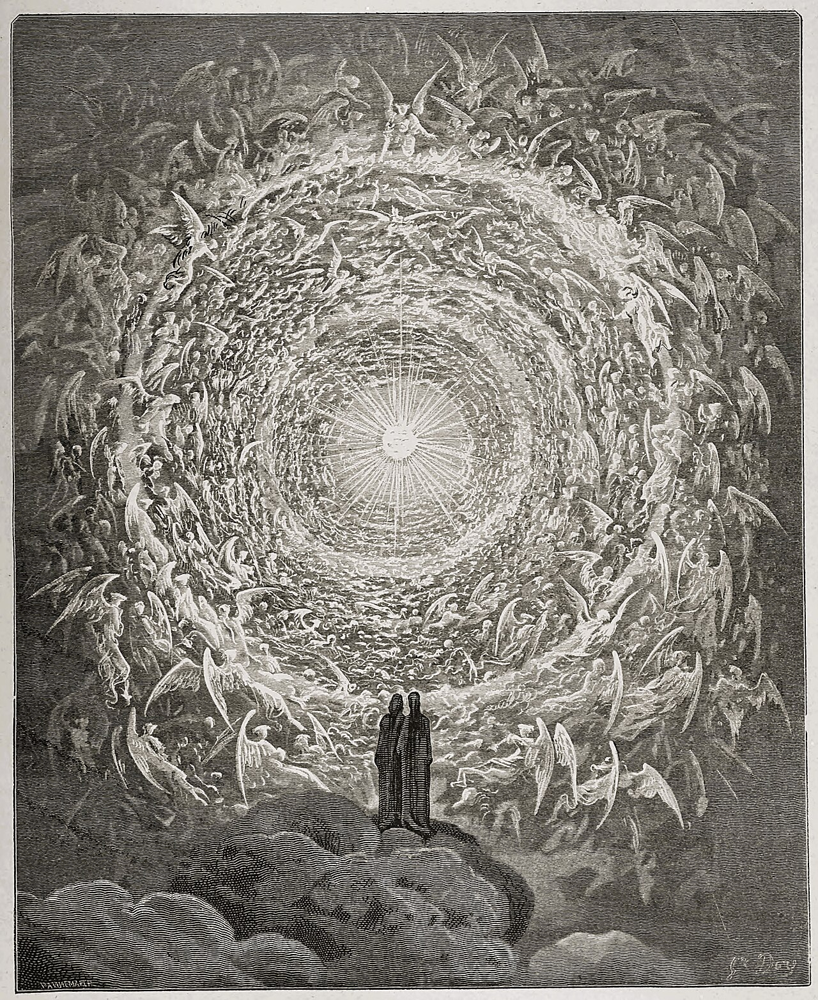
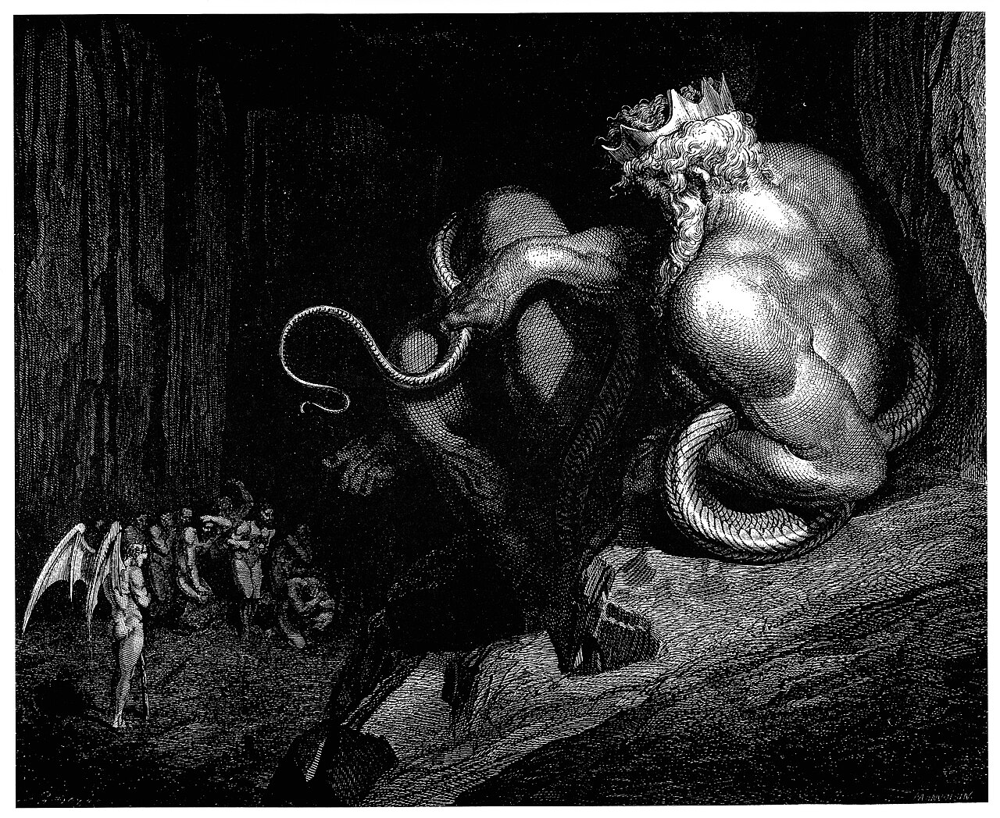
표지 판화: Gustave Doré, 『신곡』 천국편 31곡 · 지옥편 5곡
— 18 —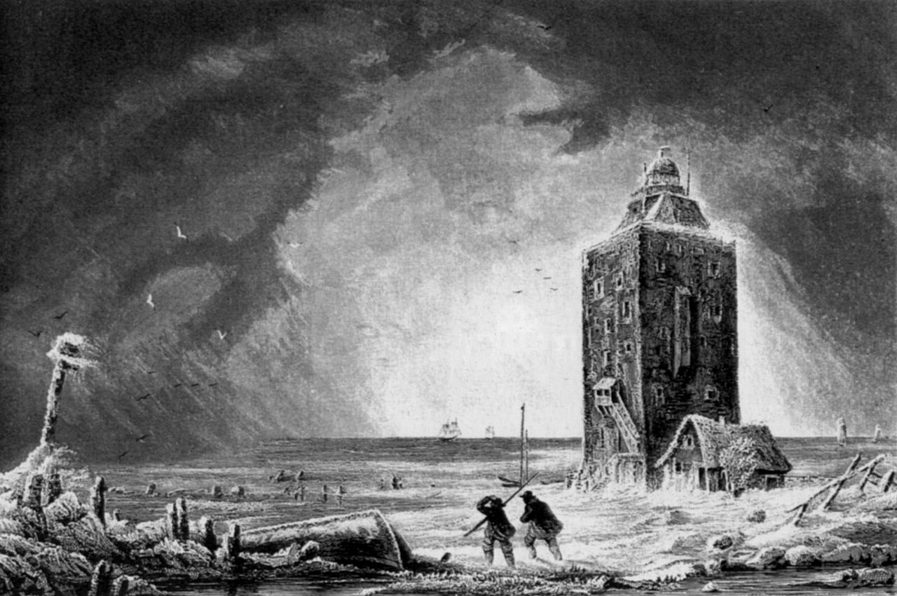
아이파베스를 설계한 대마법사가 지금 어디에 있는지는 아무도 모른다. 4원소 학자들도 1000년이 넘는 시간 전에 세상을 떠났고, 지금은 그들이 남긴 기록과 흔적만이 학교 곳곳에 남아 있다.
학교 어딘가에 네 권이 숨겨져 있다는 소문. 아무도 본 적이 없고, 실재하는지도 확인된 바 없다.
최근 급증한 교단으로, 피해와 학살 사건이 여러 차례 발생했다. 교단마다 목적은 달랐지만, 무언가를 소환하는 것이 아니라 직접 만들어내려 한다는 점은 같았다. 확실한 증거 없이는 교단을 검거하기 어려워 수사는 난항을 겪고 있다.
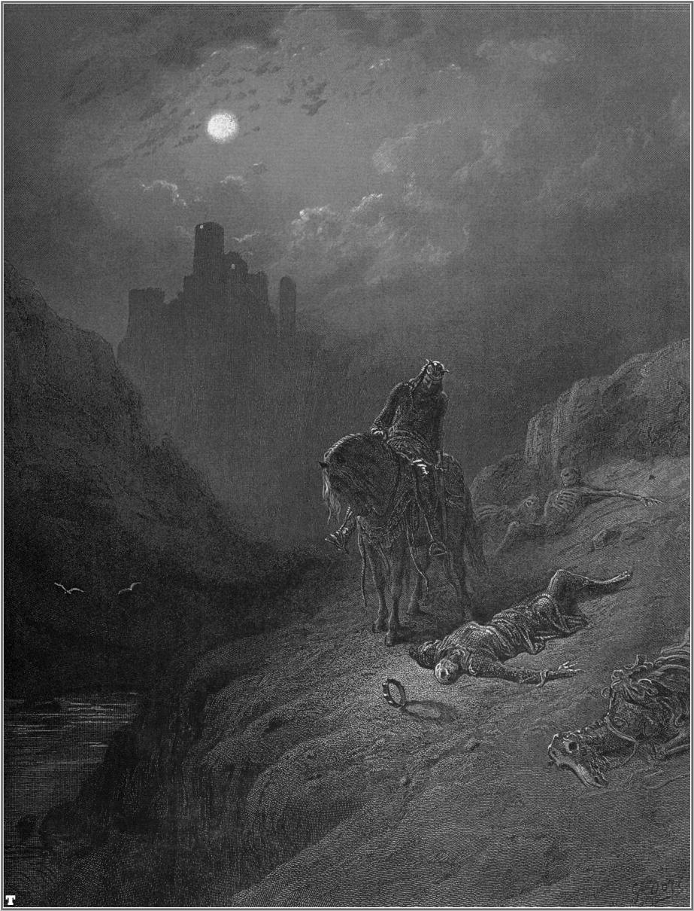
22개의 태양이 한 바퀴. 지금은 95회전 18번째, 달(XVIII)의 태양.
— 22 —시간과 날짜는 인간계와 같이 0~24시, 1~12월로 적는다. 다만 연도는 2001년, 2002년 식으로 적지 않는다. 타로 카드의 순서대로 돌아간다. 예를 들어 2회전 12번째의 태양이라고 적는다. 태양이 바뀌는 날은 인간계 기준으로 1년이다.
(회전수 − 1) × 22 + 태양 번호. 1회전은 22년이다.
현재 95회전 18번째 달의 태양은 인간계 기준으로 약 2,086년째. 월과 일은 인간계와 같고, 기준일은 3월 7일이다.
그 태양에 태어난 아이들은 정위치의 기운과 역위치의 기운이 흐른다.
이번 태양은 여교황의 태양이므로, 지식이 풍부한 아이들이 태어날 것이다.
마법사들은 이런 말을 주고받을 만큼 신앙이 깊다.
— 23 —| No. | Arcana | 정위치 | 역위치 |
|---|---|---|---|
| 0 | 광대The Fool | 모험, 무지(無知) | 경솔, 어리석음 |
| I | 마술사The Magician | 창조, 수완 | 겁많음, 기만 |
| II | 여교황The High Priestess | 지식, 총명 | 잔혹, 무례함 |
| III | 여제The Empress | 풍양, 모성 | 과잉, 허영 |
| IV | 황제The Emperor | 책임, 부성(父性) | 오만, 존대 |
| V | 교황The Hierophant | 가르침, 관대함 | 협량, 나태 |
| VI | 연인The Lovers | 연애, 쾌락 | 질투, 배신 |
| VII | 전차The Chariot | 전진, 승리 | 폭주, 좌절 |
| VIII | 힘Strength | 힘, 용기 | 본성, 자만 |
| IX | 은둔자The Hermit | 탐색, 사려깊음 | 음습, 폐쇄적, 탐욕 |
| X | 운명Wheel of Fortune | 기회, 일시적인 행운 | 오산, 불운 |
| No. | Arcana | 정위치 | 역위치 |
|---|---|---|---|
| XI | 정의Justice | 균형, 정당함 | 편견, 부정 |
| XII | 매달린 사람The Hanged Man | 자기희생, 인내 | 무의미한 희생, 맹목 |
| XIII | 죽음Death | 격변, 이별 | 변화의 유보, 고착 |
| XIV | 절제Temperance | 조화, 견실 | 낭비, 불안정 |
| XV | 악마The Devil | 사심, 속박, 타락 | 악순환으로부터의 각성 |
| XVI | 탑The Tower | 파괴, 파멸 | 필요로 하는 파괴 |
| XVII | 별The Star | 희망, 동경 | 환멸, 비애 |
| XVIII | 달The Moon | 불안, 애매함, 혼돈 | 불안 해소, 명료함, 혼돈의 끝 |
| XIX | 태양The Sun | 밝은 미래, 만족 | 연기(延期), 실패 |
| XX | 심판Judgement | 부활, 개선 | 재기불능, 후회 |
| XXI | 세계The World | 완성, 완전 | 미완성, 어중간함 |
스진하던 2020~21년에 썼던, 마학과 어울린다고 생각한 곡들.
삽화는 모두 퍼블릭 도메인 판화입니다 (Wikimedia Commons).
가죽·종이·책상 질감: Poly Haven, ambientCG (CC0). 책장 넘김: DearFlip Lite (CC BY-NC-ND 4.0, 비영리 개인 사용).
글꼴: Song Myung, Gowun Batang, Diphylleia, Hahmlet, IM Fell English (SIL OFL).
책장 모서리를 끌거나 눌러서 넘기세요 · ← →

_Bodleian_Library.jpg){kind=link}


_(14757201076).jpg){kind=link}


,_RP-P-1904-20.jpg){kind=link}
,_RP-P-1904-19.jpg){kind=link}
,_RP-P-1904-21.jpg){kind=link}
,_RP-P-1904-22.jpg){kind=link}


.jpg){kind=link}
.jpg){kind=link}